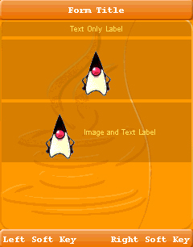
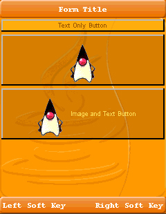
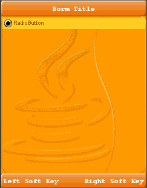
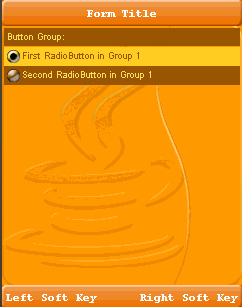
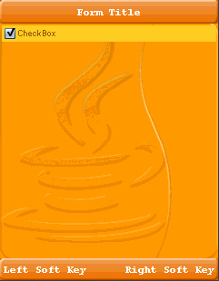
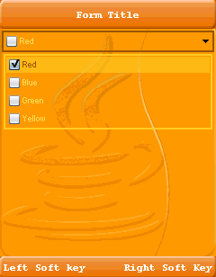
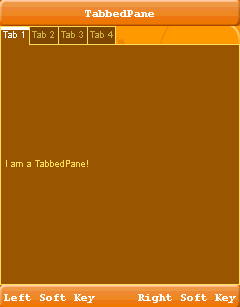
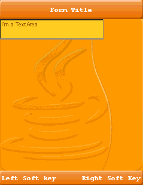
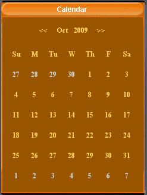

| LWUIT Developer’s Guide |
| C H A P T E R 2 |
A Component is an object having a graphical representation that can be displayed on the screen and can interact with the user. The buttons, check boxes, and radio buttons in a typical graphical UI are all examples of a component. Component is the base class. All the widgets in the Lightweight UI Toolkit library use the composite pattern in a manner similar to the AWT Container and Component relationship.
A Container is a composite pattern with a Component object. It enables nesting and arranging multiple components using a pluggable layout manager architecture. Containers can be nested one within the other to form elaborate UIs. Components added to a container are tracked in a list. The order of the list defines the components' front-to-back stacking order within the container. If you do not specify an index when you add a component to a container, it is added to the end of the list (and hence to the bottom of the stacking order).
Form is a top‐level component that serves as the root for the UI library. This Container handles the title and menus and allows content to be placed between them. By default the form's central content (the content pane) is scrollable. Form contains Title bar, MenuBar and a ContentPane. Invocations of Form's addComponent method are delegated to the content pane’s addComponent. The same applies to most composite related methods (e.g. setLayout, getComponent and so forth).
The following code demonstrates creation and setup of a form.
The following notes correspond to the comments in EXAMPLE 2-1.
The first line of code creates a form using a constructor that lets you set the form title. The other frequently used form constructor is the no-argument constructor.
Next the code specifies the layout manager of the form. Layout managers are discussed later in this guide.
The next bit of code adds a label to the form content pane. Adding components to a Form (which is a Container) is done with addComponent(Component cmp) or addComponent(Object constraints, Component cmp), where constraints are the locations in the layout manager, BorderLayout.
A Transition is the movement effect action that occurs when switching between forms. See the Transitions and Animation chapter.
Form has menus to emulate the device soft keys, for example. To set such a menu bar item, command, use the addCommand(Command cmd) method. The Commands are placed in the order they are added. If the Form has one Command it is placed on the right. If the Form has two Commands the first one added is placed on the left and the second one is placed on the right. If the Form has more than two Commands the first one stays on the left and a Menu is added with all the remaining Commands.
The Label widget can display a single line of text and/or an image and align them using multiple options. If you need to create a component that displays a string, an image, or both, you should use or extend Label. If the component is interactive and has a specific state, a Button is the most suitable widget (instead of a label).
To create a Label, use one of the following calls:
Label textLabel = new Label("I am a Label"); // for a text label
// create an image for an icon label
Image icon = Image.createImage("/images/duke.png");
Label imageLabel = new Label(icon);
Labels can be aligned to one of the following directions: CENTER, LEFT, RIGHT. LEFT is the default. In addition the text can be aligned relative to the image position. Valid values are TOP, BOTTOM, LEFT, RIGHT, where the default is RIGHT. To update the text position use:
setTextPosition(int alignment);
FIGURE 2-2 displays three types of labels with text to icon alignment position of RIGHT. The container is divided into three rows, and the label in each row is as wide as possible. FIGURE 2-3 shows relative alignment, with the label below the icon.
The Button component enables the GUI developer to receive action events when the user focuses on the component and clicks. In some devices a button might be more practical and usable than a command option. Button is the base class for several UI widgets that accept click actions. It has three states: rollover, pressed, and the default state. It can also have ActionListeners that react when the Button is clicked.
To get the user clicking event, you must implement an ActionListener, which is notified each time the user clicks the button. The following code snippet creates an action listener and changes the text on the button, every time the user clicks it.
final Button button = new Button("Old Text"); button.addActionListener(new ActionListener() {
public void actionPerformed(ActionEvent evt) {
button.setText("New Text");
}
});
Button extends Label, so you can create three type of buttons: text only, image only or image and text button.
RadioButton is a Button that maintains a selection state exclusively within a specific ButtonGroup. Because RadioButton inherits from Button, radio buttons have all the usual button characteristics, as discussed in Button. For example, you can specify the image displayed in a radio button. Each time the user clicks a radio button (even if it was already selected), the button fires an action event, just as in Button.
RadioButton radioButton = new RadioButton(“Radio Button”);
FIGURE 2-5 shows the RadioButton this code produces.
The ButtonGroup component manages the selected and unselected states for a set of RadioButtons. For the group, the ButtonGroup instance guarantees that only one button can be selected at a time.
Initially, all RadioButtons in a ButtonGroup are unselected. Each ButtonGroup maintains the selected index, and can get a specific RadioButton by calling getRadioButton(int index).
The following code snippet creates a button group made of two RadioButtons.
Label radioButtonsLabel = new Label("RadioButton:");
....
RadioButton rb1 = new RadioButton("First RadioButton in Group 1");
RadioButton rb2 = new RadioButton("Second RadioButton in Group 1");
ButtonGroup group1 = new ButtonGroup();
group1.add(rb1);
group1.add(rb2);
exampleContainer.addComponent(radioButtonsLabel);
exampleContainer.addComponent(rb1);
exampleContainer.addComponent(rb2);
The code snippet result is shown in FIGURE 2-6.
Check boxes are similar to RadioButtons but their selection model is different, because they can flip the selection state between selected and unselected modes. A group of radio buttons, on the other hand, can have only one button selected. Because CheckBox inherits from Button, check boxes have all the usual button characteristics, as discussed in Button. For example, you can specify the image displayed in a check box. Each time the user select a check box (even if it was already selected), it fires an action event, just as in Button.
final CheckBox checkBox = new CheckBox(“Check Box”);
This code produces the CheckBox shown in FIGURE 2-7.
To catch select and unselect events you can try this:
checkBox.addActionListener(new ActionListener() {
public void actionPerformed(ActionEvent evt) {
if(checkBox.isSelected()) {
System.out.println("CheckBox got selected");
} else {
System.out.println("CheckBox got unselected");
}
}
});
A combo box is a list that allows only one selection at a time. When a user clicks the combo box button, a drop‐down list of elements allows the user to select a single element. The combo box is driven by the list model and allows all the renderer features of the List as well.
Other components that can display one-of-many choices are groups of radio buttons, check boxes, buttons, and lists. Groups of radio buttons are generally the easiest for users to understand, but combo boxes can be more appropriate when space is limited or more than a few choices are available. Lists are not always attractive, but they are more appropriate than combo boxes when the number of items is large (say, over five).
The following code creates a combo box (a list model that is built from check boxes) and sets it up:
String[] content = { "Red", "Blue", "Green", "Yellow" };
// 1. Creating the combo box
ComboBox comboBox = new ComboBox(content);
// 2. Setting a checkBox renderer
comboBox.setListCellRenderer(new checkBoxRenderer());
// 3. Adding a action listener to catch user clicking
// to open the ComboBox
comboBox.addActionListener(myActionListener......);
The following notes correspond to the comments in the code above.
This combo box code contains an array of strings, but you could just as easily use labels instead.
To put anything else into a combo box or to customize how the items in a combo box look, you need to write a custom renderer.
The next line of code (which calls setListCellRender) registers an action listener on the combo box.
The following is a sample of renderer code:
/**
* Demonstrates implementation of a renderer derived from a CheckBox
*/
private static class checkBoxRenderer extends CheckBox implements ListCellRenderer {
/** Creates a new instance of checkBoxRenderer */
public checkBoxRenderer() {
super("");
}
// Setting the current check box text and status
public Component getListCellRendererComponent(List list,
Object value, int index, boolean isSelected) {
setText("" + value);
if (isSelected) {
setFocus(true);
setSelected(true);
} else {
setFocus(false);
setSelected(false);
}
return this;
}
// Returning the list focus component
public Component getListFocusComponent(List list) {
setText("");
setFocus(true);
setSelected(true);
return this;
}
}
The sample code produces the combo box in FIGURE 2-8.
A tabbed Pane is a container that lets the user switch between a group of components that all share the same space by focusing on a tab with a title, an icon, or both. The user chooses which component to view by selecting the tab corresponding to the desired component.
To create a tabbed pane, instantiate TabbedPane, create the components you wish it to display, and then add the components to the tabbed pane using the addTab or insertTab methods. TabbedPane has the ability to remove tabs as well, by calling removeTabAt(int index) at a given position index. A tab is represented by an index corresponding to the position it was added in, where the first tab has an index equal to 0 and the last tab has an index equal to the tab count minus 1.
If the tab count is greater than 0, then there is always a selected index, which by default is initialized to the first tab. If the tab count is 0, then the selected index is -1.
TabbedPane has four different tab placement orientations. The default tab placement is set to the TOP location. You can change the tab placement to LEFT, RIGHT, TOP or BOTTOM using the setTabPlacement method.
The following code creates a TabbedPane with tab placement of bottom, and places a Label in the center of the first (and only) tab.
TabbedPane tabbedPane = new TabbedPane(TabbedPane.TOP);
tabbedPane.addTab("Tab 1", new Label("I am a TabbedPane!"));
tabbedPane.addTab("Tab 2", new Label("Tab number 2"));
....
The text area represents text that might be editable using the system native editor (it might occur in a new screen). The native editor is used to enable complex input methods (such as T9) and application internationalization. The following code creates and initializes the text area:
TextArea textArea = new TextArea(5, 20, TextArea.NUMERIC); textArea.setEditable(false);
The first two arguments to the TextArea constructor are hints as to the number of rows and columns, respectively, that the text area should display. The third one is a constraint that is passed into the native text editor. Valid values can be one of ANY, EMAILADDR, NUMERIC, PHONENUMBER, URL, or DECIMAL. In addition it can be bitwise OR'd with one of PASSWORD, UNEDITABLE, SENSITIVE, NON_PREDICTIVE, INITIAL_CAPS_SENTENCE, INITIAL_CAPS_WORD. For example, ANY | PASSWORD. The default value is ANY. In the above example NUMERIC only allows the user to type numbers.
Text areas are editable by default. The code setEditable(false) makes the text area uneditable. It is still selectable, but the user cannot change the text area's contents directly.
A 5 x 20 text area is shown in FIGURE 2-10.
TextArea doesn't always allow in-place editing on existing devices and doesn't provide "fine grained control" over the input. This allows a text area to be lightweight, and portable for all possible devices. These restrictions sometimes cause a poor user experience because it requires users to go into a different screen for input (since all input is handled natively by the device). From a developer standpoint the native input can be a problem since it doesn't send change events and doesn't provide control over allowed input.
LWUIT provides the TextField component to support direct mobile phone input from within LWUIT. Unlike a TextArea, TextField is completely implemented in LWUIT. Developers can override almost all of its features to provide deep customization (for example, masked input, localization, and more).
TextField inherits the TextArea component and all of its features. It also supports moving to the native text editor.
The constructor also accepts several arguments, similar to the TextArea component.
TextField also has some limitations:
Does not support input in foreign locales unless you provide code for foreign input
Does not work on devices with unique keyboards, such as the Perl
Creating a text field is trivial:
TextField f = new TextField();

The LWUIT calendar component allows users to pick a date using a monthly calendar user interface. Use the calendar component to navigate and pick a date, as shown in the following code:
Calendar cal = new Calendar();
Developers can monitor state changes within the calendar using a data change listener or an action listener.
Label (and all its subclasses) includes ticker support. A ticker scrolls the content of a long label across the screen. Ticker ability in labels is usually indicated by displaying three dots "..." after the end of the label. When the label (button, checkbox, etcetera) receives focus, these three dots disappear and the label starts animating like a stock ticker.
A ticker can be started explicitly using a call to startTicker or stopTicker in Label. It can also be prevented by invoking setTickerEnabled(false). To prevent the three dots from appearing at the end of labels or components that support tickering, use setEndsWith3Points(false).
BiDi refers to bidirectional language support, generally used for right-to-left (RTL) languages. There is plenty of information about RTL languages (Arabic, Hebrew, Syriac, Thaana) on the internet, but as a brief primer here is a minor summary.
Most western languages are written from left to right (LTR), however some languages are normally written from right to left (RTL). Speakers of these languages expect the UI to flow in the opposite direction, otherwise it seems "weird" just like reading this word in RTL would look: "driew" to most English speakers.
The problem posed by RTL languages is known as bi-directional) and not as RTL since the "true" problem isn't the reversal of the writing/UI but rather the mixing of RTL and LTR together. For example, numbers are always written from left to right (just like in English) so in an RTL language the direction is from right to left and once we reach a number or English text embedded in the middle of the sentence (such as a name) the direction switches for a duration and is later restored.
LWUIT supports BiDi with the following components:
BiDi algorithm - allows converting between logical to visual representation for rendering
Global RTL flag- default flag for the entire application indicating the UI should flow from right to left
Individual RTL flag - flag indicating that the specific component/container should be presented as an RTL/LTR component (for example, for displaying English elements within an RTL UI).
Most of LWUIT's RTL support is under the hood. The LookAndFeel global RTL flag can be enabled using:
UIManager.getInstance().getLookAndFeel().setRTL(true)
(Notice that setting the RTL to true implicitly activates the BiDi algorithm).Once RTL is activated all positions in LWUIT become reversed and the UI becomes a mirror of itself. For example, a softkey placed on the left moves to the right, padding on the left becomes padding on the right, the scroll moves to the left, etcetera.
This applies to the layout managers (except for group layout) and most components. BiDi is mostly seamless in LWUIT but a developer still needs to be aware that his UI might be mirrored for these cases.
| LWUIT Developer’s Guide | 12-11-09 |
Copyright © 2009, Sun Microsystems, Inc. All rights reserved.